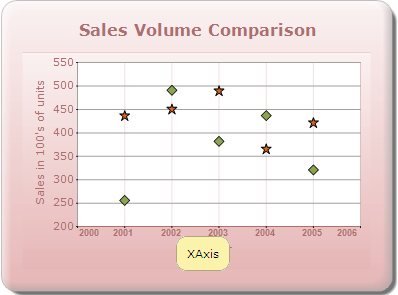
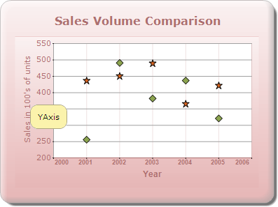

You can also set the tooltip for the axis. The following code snippet shows how to set the tooltip for the axis.
[C#]
chartModel.PrimaryXAxis.ToolTip = "XAxis";
chartModel.PrimaryYAxis.ToolTip = "YAxis";

Figure 336: Chart XAxis ToolTip

Figure 337: Chart YAxis Tooltip